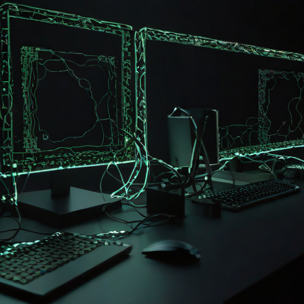

Live take · 2026-10-31 · unedited
This page was made during a live take, filmed in one shot. Bee drew the picture, Ryzen wrote this page and published it, and Windows narrated every step out loud - each machine on its own screen.

The live value
Picked during the take, so nothing here could have been prepared beforehand. It is in this page, in the commit that published it, and on all three screens in the film.
What Bee reported
Bee holds one large language model at a time. To draw, it unloads it, draws, and loads it back - these are the times it reported to the other two machines.
| Time | Machine | What happened |
|---|---|---|
| 15:01:10.8 | Bee | unloaded its language model to make room |
| 15:01:11.8 | Bee | started drawing |
| 15:01:19.6 | Bee | finished the drawing, reloading its model |
| 15:02:02.2 | Bee | had its model back |
Check it yourself